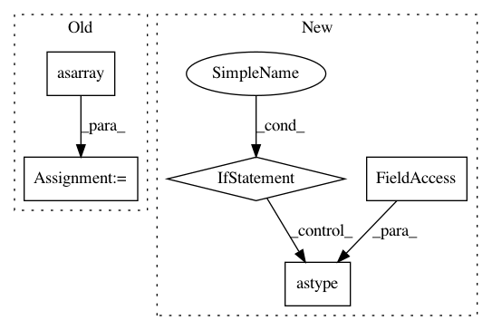

889cde4a62dbcedbb5856ed3b295b742031074ac,io/eolearn/io/processing_api.py,Sentinelhub16bitInput,execute,#Sentinelhub16bitInput#Any#,73
Before Change
eopatch.timestamp = dates
eopatch[(FeatureType.DATA, self.feature_name)] = np.asarray(arrays)
eopatch[(FeatureType.SCALAR, "norm_factor")] = np.asarray(norm_factor)[:,np.newaxis]
return eopatch
After Change
dates = wfs.get_dates()
if len(dates) <= 1:
return dates
sorted_dates = sorted(dates)
separate_dates = [sorted_dates[0]]
for curr_date in sorted_dates[1:]:
if curr_date - separate_dates[-1] > self.time_difference:
separate_dates.append(curr_date)
dates = separate_dates
// iter_pairs = ((d1, d2) for d1, d2 in zip(sorted_dates[:-1], sorted_dates[1:]))
// ------------------- build request -------------------
responses = [
SentinelHubOutputResponse("default", "image/tiff"),
SentinelHubOutputResponse("userdata", "application/json")
]
body = SentinelHubRequest(
bounds=SentinelHubBounds(crs=self.bbox.crs.opengis_string, bbox=list(self.bbox)),
data=[SentinelHubData(data_type="S2L1C")],
output=SentinelHubOutput(size_x=self.size_x, size_y=self.size_y, responses=responses),
evalscript=EVALSCRIPT
)
request = SentinelHubWrapper(
body=body, headers={"accept": "application/tar", "content-type": "application/json"}
)
// ------------------- map dates to the built request -------------------
requests = [(copy_format_request(request, date), date) for date in dates]
// ------------------- map dates to the built request -------------------
client = SentinelhubClient(cache_dir="cache_dir")
images = [(date, client.get(req, decoder=tar_to_numpy)) for req, date in requests]
images = [(date, img) for date, img in images if img is not None]
dates = [date for date, img in images]
if eopatch is None:
eopatch = EOPatch()
// norm_factor = [img[1][1] for img in images]
// arrays = [img[1][0] for img in images]
// eopatch.timestamp = dates
// eopatch[(FeatureType.DATA, self.feature_name)] = np.asarray(arrays)
// eopatch[(FeatureType.SCALAR, "norm_factor")] = np.asarray(norm_factor)[:,np.newaxis]
arrays = [(img * norm_factor).astype(np.float32) for date, (img, norm_factor) in images]
eopatch[(FeatureType.DATA, self.feature_name)] = np.asarray(arrays)
return eopatch
In pattern: SUPERPATTERN
Frequency: 3
Non-data size: 5
Instances
Project Name: sentinel-hub/eo-learn
Commit Name: 889cde4a62dbcedbb5856ed3b295b742031074ac
Time: 2019-10-11
Author: jovan.visnjic@sinergise.com
File Name: io/eolearn/io/processing_api.py
Class Name: Sentinelhub16bitInput
Method Name: execute
Project Name: RaRe-Technologies/gensim
Commit Name: 8daace20a97c65f845ed008f4b60bdc62b12e250
Time: 2018-04-15
Author: 35378674+o-P-o@users.noreply.github.com
File Name: gensim/matutils.py
Class Name:
Method Name: unitvec
Project Name: scipy/scipy
Commit Name: ae151484780b389b5c7b4530c9ac1ef4bb659e23
Time: 2020-01-13
Author: rlucas7@users.noreply.github.com
File Name: scipy/special/_basic.py
Class Name:
Method Name: factorial